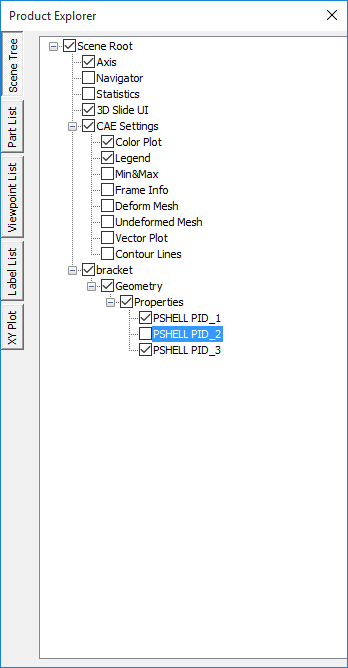

Scene Tree
Scene Tree found under Product explorer helps users to
- Know the product tree.
- Show/hide a part or group of parts.
- Highlight a part or group of parts.
- Collapse and expand the Product tree visibility.
Context menu for Scene Tree
Show All Shows all parts independent of selection Invert Show Hides visible parts and Shows invisible parts Hide others Hides all parts except current selection Focus Sets focus on the selected part or group Select Selects the part by highlighting its bounding box AddtoSelection Adds to the selection list by highlighting parts bounding box Deselect Deselects current selection User Info Lets users add information to the part selected. Transform Allows users to apply any transformation to the group node. Not applicable for leaf node or individual part. Display Mode Applies one of the following display modes to the current selection.
Shaded Smooth shade Shaded Mesh Smooth shade with mesh Wireframe Model as edges HiddenLine Wireframe in which, hidden lines removed Point Model as points Transparent Semi-transparent Model Set Random Color Model parts with random colors Set Color Allows user to define a color to the part selected Switch Animation Switch into animation mode. Shows a part per frame as in the product tree. Click the option again to stop the animation. Rename Rename the group or part name. Delete Deletes selected part or group of parts from the scene and product tree Expand Allows user to expand the group to levels, All, Level 1, Level 2 and Level 3. Collapse Allows user to collapse the group to level, All /Level 1/ Level 2/ Level 3. Set As Current Model Allows user to set this model as Current CAE Model. Exclude Section Allows user to exclude the selected parts from cut-section.
Steps to view Product Tree
Right click in the Viewer Window, to open the Viewer Context menu
Select Product Explorer option from context menu or click

The Product Explorer panel opens as shown below.

The various fields that appear in the Scene Tree Tab are explained below
| Axis | Shows/Hides the axis triad at the top right corner. |
|---|---|
| Navigator | Shows/Hides the navigator in the right part of viewer |
| Statistics | Shows/Hides graphical or rendering statistics in the bottom right corner. |
| 3D Slide UI | Shows/Hides viewpoint slide UI in the bottom right corner. |
User can switch on or off any CAE property listed in the following table,
| Color Plot | Applies color plot to the Model or Removes it. |
|---|---|
| Legend | Shows/Hides the Color Palette. |
| Min&Max | Shows/Hides Min and Max values and its attached IDs in the label. |
| Reverse Legend | Reverses legend palette values. |
| Frame Info | Shows/Hides frame information in the bottom left corner of the viewer. |
| Deform Mesh | Applies or Removes deformation. |
| Undeformed Mesh | Shows /Hides Undeformed mesh. |
| Vector Plot | Shows/Hides Vector Plot |
| Contour Lines | Shows/Hides Contour Lines. |
Steps to show / hide parts
- Uncheck an object check box below the parts in the product tree.

- Notice that the unchecked part gets hidden in the viewer as shown below.
- Check it again to show the hidden part.
Steps to highlight a part
- Expand the product tree in product explorer.
- Click on a part in the product tree.
- Right click on the same part, which drops down a menu as below.

- Click Highlight and notice that part is highlighted as shown below.

Steps to focus on a part or group of parts
- Select a part or group of parts in the product tree or in viewer or double clicking the part.

- Right click and Select Focus option from the context menu.

The part or group of parts is focused.
How to exclude parts from cut section clipping?
- Load a cax file
- Switch on section plane.
- Click a part name in product explore, which is clipped by section plane.
- Open context menu using right mouse click inside product explorer panel.
- Click ‘Exclude Section’
- The selected part is visible now and not clipped by section plane.
- Repeat the step for other required parts.
- Click or uncheck the option ‘Exclude Section’ again to include the part again.
Note
- To exclude or include, this function is applied for only one selected part in the product explorer.